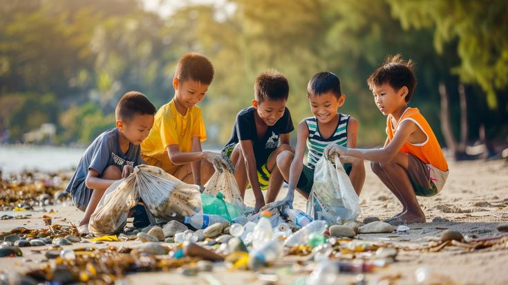

TUJUAN 01
Memberikan Edukasi
Menyediakan informasi tentang pencemaran laut, sampah pantai, perubahan iklim, dan ekosistem pesisir dengan bahasa yang mudah dipahami.

TENTANG JAGAPESISIR
JagaPesisir adalah website edukasi yang mengajak masyarakat mengenali permasalahan pesisir, melindungi ekosistem laut, dan melakukan aksi nyata untuk menjaga lingkungan.
Kenali Misi Kami →BERSAMA MENJAGA MASA DEPAN PESISIR
MENGAPA JAGAPESISIR?
Laut dan pantai memiliki peran penting bagi kehidupan. Melalui informasi yang mudah dipahami, JagaPesisir mendorong masyarakat untuk lebih peduli terhadap pencemaran dan kelestarian ekosistem pesisir.
TUJUAN 01
Menyediakan informasi tentang pencemaran laut, sampah pantai, perubahan iklim, dan ekosistem pesisir dengan bahasa yang mudah dipahami.
TUJUAN 02
Mendorong masyarakat memahami pentingnya mangrove, terumbu karang, dan keanekaragaman hayati laut.
TUJUAN 03
Membantu masyarakat menerapkan kebiasaan sederhana, seperti mengurangi plastik sekali pakai dan menjaga kebersihan pantai.
MANFAAT WEBSITE
JagaPesisir membantu pengunjung memperoleh pengetahuan dasar tentang masalah lingkungan pesisir dan menemukan langkah sederhana yang dapat dilakukan dalam kehidupan sehari-hari.
Website ini ditujukan kepada pelajar, mahasiswa, keluarga, komunitas lingkungan, serta masyarakat umum yang ingin mengenal konservasi laut dan pantai.
Meningkatkan pemahaman tentang perubahan iklim dan pentingnya tindakan untuk menghadapi dampaknya terhadap wilayah pesisir.
Mendorong perlindungan laut, pengurangan pencemaran, dan pelestarian kehidupan serta ekosistem bawah laut.
DI BALIK JAGAPESISIR
Website JagaPesisir dikembangkan secara kolaboratif sebagai proyek Ujian Tengah Semester mata kuliah Pemrograman Web.
ANGGOTA 01
Bertanggung jawab atas beranda, desain utama, navigasi, dan CSS website.
ANGGOTA 02
Bertanggung jawab atas halaman edukasi, artikel, dan referensi konten.
ANGGOTA 03
Bertanggung jawab atas halaman panduan, tentang website, referensi aset, dan dokumentasi.
BELAJAR DARI SUMBER TEPERCAYA
Berikut beberapa lembaga yang dapat dijadikan rujukan untuk mempelajari konservasi laut, sampah laut, dan ekosistem mangrove.
LINGKUNGAN GLOBAL
Sumber informasi mengenai isu lingkungan, pencemaran plastik, dan upaya perlindungan lingkungan global.
Kunjungi UNEP →SAMPAH LAUT
Referensi mengenai sampah laut dan dampaknya terhadap ekosistem perairan.
Kunjungi NOAA →EKOSISTEM MANGROVE
Referensi untuk mempelajari hutan mangrove dan pengelolaan ekosistemnya.
Pelajari Mangrove →MULAI DARI DIRI SENDIRI
Temukan aksi sederhana yang bisa kamu lakukan setiap hari.